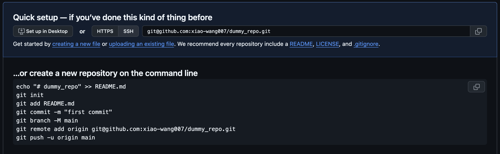

Lab 2: Writing a Talker and Listener
Contents
6. Lab 2: Writing a Talker and Listener¶
Worksheet Contact: Xiao Wang (x.wang16@leeds.ac.uk)
Please aim to complete this worksheet during week 3. The labs scheduled in week 3 will offer support and guidance for this worksheet.
Note
Access lab2 files - Instructions As always, before you start running any commands or code for this worksheet, make sure you are in a Singularity environment.
Then execute the following commands:
In a terminal, go to
cd ~/ros2_ws/src.Run:
git clone git@github.com:COMP3631-2026/lab2 lab2Note the ” lab2” at the end of the the command:
git clone [...] lab2.
Run
cd $HOME/ros2_wsand thencolcon buildto build the new package.
6.1. Worksheet Objective¶
The objective of this worksheet is to familiarise you with key ROS (Robot Operating System) concepts such as topics, publishers, and subscribers. These elements are essential to understanding and effectively utilising ROS. While this worksheet does not involve programming a robot, the concepts you learn here will be instrumental for future activities where you will apply these principles in actual robot programming.
6.2. ROS2 Packages¶
As discussed in last week’s lecture, a ROS2 package organises related code and files within a named directory. This is a fundamental aspect of structuring and managing projects in ROS2.
The lab worksheets that we will be releasing in the upcoming weeks, including
lab1, lab2, and others, are structured as directories located under
~/ros2_ws/src. Each of these directories is, in fact, a ROS2 package.
If you’re interested, you have the option to create your own ROS2 packages. You can optionally learn more here.
6.3. Talker (Publisher)¶
Let’s begin by studying a basic publisher and subscriber, a concept we explored in last week’s lecture too. Our goal is to create simple ROS nodes that exchange messages over the network.
In ROS, it’s possible to use either Python or C++ for writing ROS nodes.
However, for this module, we’ll concentrate on using Python. We need to
create two nodes: the publisher and the subscriber. These
nodes will exchange “Hello World” messages. You’ll find
all the necessary files for this already included in your lab2 package. Please
ensure that you have cloned this package as previously directed in the
info box provided at the top of this page.
Open the talker.py file under ~/ros2_ws/src/lab2/lab2/ and inspect its content.
1import rclpy
2from rclpy.node import Node
3from std_msgs.msg import String
4
5
6class Talker(Node):
7 def __init__(self):
8 super().__init__('talker')
9 self.publisher = self.create_publisher(String, 'chatter', 10)
10
11 timer_in_seconds = 0.5
12 self.timer = self.create_timer(timer_in_seconds, self.talker_callback)
13 self.counter = 0
14
15 def talker_callback(self):
16 msg = String()
17 msg.data = f'Hello World, {self.counter}'
18 self.publisher.publish(msg)
19 self.get_logger().info(f'Publishing: {msg.data}')
20 self.counter += 1
21
22
23def main(args=None):
24 rclpy.init(args=args)
25
26 talker = Talker()
27 rclpy.spin(talker)
28
29
30if __name__ == '__main__':
31 main()
Here is an explanation of each line:
Line 1 imports the necessary ROS library,
rclpy.Line 2 imports the
Nodeclass fromrclpy.node. We will inherit from that class and implement new functionality.Since our publisher will publish a String, we need to specify the type of the message. Hence, in Line 3 we import the ROS
Stringtype.Between lines 6 and 20 we define our
Talkerclass which inherits fromNodeclass, making this class a ROS Node.Between lines 7 and 13 we implement the initialiser of the class.
In line 8 we call the superclass’ initialiser passing in the name of the node.
In line 9 we create a ROS publisher. The first argument is the message type (a ROS
String), the second ('chatter') is a string with the name of the topic we want to publish to and the third argument is the outgoing message queue size.In lines 11-12 we create a timer object. We pass first the frequency at which we want a method to be called (
timer_in_seconds), followed by the method of the class we want to get called (self.talker_callback). This way, we create a way to keep running thetalker_callbackevery 0.5 seconds.
Between lines 15 and 20, we define the
talker_callbackmethod:In line 16, we create a ROS String object (the message we will publish).
In line 17, we populate the message’s
dataproperty with the f-string: “Hello World, {self.counter}”.In line 18, we publish the message to the topic (i.e.,
chatter).In line 19, we simply log a message (this is equivalent to printing a message to the terminal, it’s not actually publishing anything to the topic).
In line 20, we increment the counter by 1.
In line 24, we initialise ROS communications.
In line 26, we create an instance of our class.
In line 27, we run the
spinmethod, passing in our object, which keeps the Python script running until we kill it.
6.3.1. Running the publisher node¶
We can use ROS commands to run our code. In a terminal window, run:
ros2 run lab2 talker
The ros2 run command is a ROS command that can run a code from a package.
We don’t need to specify absolute path to file, instead we provide the package
and the name of the target. ros2 run package_name executable_target. ROS is able
to infer this from lab2/setup.py file.
You should notice the publisher logging its outputs in the terminal.
6.4. Listener¶
Now that the publisher is “talking”, we need to run the listener to listen to
the messages and print them out. Open and inspect the listener.py file.
1import rclpy
2from rclpy.node import Node
3from std_msgs.msg import String
4
5
6class Listener(Node):
7 def __init__(self):
8 super().__init__('listener')
9 self.subscription = self.create_subscription(String, 'chatter', self.listener_callback, 10)
10 self.subscription # prevent unused variable warning
11
12 def listener_callback(self, msg):
13 self.get_logger().info(f'I heard: {msg.data!r}')
14
15
16def main(args=None):
17 rclpy.init(args=args)
18 listener = Listener()
19 rclpy.spin(listener)
20
21
22if __name__ == '__main__':
23 main()
Explaining new commands (refer to the publisher section for the rest):
In line 9, we create a subscriber to the
chattertopic. We pass the following arguments:Stringwhich is the type of the messages we expect from that topic,chatterthe name of the topic we want to subscribe to,self.listener_callbacka method to process messages received from the topic, and10which is the queue size.In line 12, we define a callback for the listener, which defines a single parameter:
msg, the message incoming from the topic.In line 13, we simply log the message received.
6.4.1. Running the listener node¶
We simply need to run the listener node. Open a new terminal window, make sure you are within a Singularity environment, and run:
ros2 run lab2 listener
Do you keep getting messages printed to the terminal? If so, well done!
6.5. Using a ROS launch file¶
To set up this basic configuration, we had to utilise two separate terminal windows: one to run the publisher node, and another for the subscriber node. However, when operating a robot, which often requires running dozens or even hundreds of nodes, manually opening and managing terminal windows would be highly impractical and chaotic.
Fortunately, there’s a more efficient solution available! This approach simplifies the process of running multiple nodes, ensuring a more streamlined and organised workflow.
Introducing ROS launch files 🪄.
ROS solves this problem with launch files. These files, which can be written in XML, Python, or YAML, serve as a blueprint for running ROS applications. They consolidate the instructions for launching various components of a ROS application into a single, self-contained file. In this course, we’ll specifically focus on Python-based launch files, which offer a flexible and powerful way to orchestrate the execution of multiple ROS nodes simultaneously.
We have an example under ~/ros2_ws/src/lab2/launch/chatter.py. Open that
file and inspect it:
1from launch import LaunchDescription
2from launch_ros.actions import Node
3
4
5def generate_launch_description():
6 return LaunchDescription([
7 Node(
8 package='lab2',
9 executable='talker',
10 name='my_talker'
11 ),
12 Node(
13 package='lab2',
14 executable='listener',
15 name='my_listener'
16 ),
17 ])
The file specifies two nodes that are going to be launched (lines 7 and 12).
Note that we specify the package they live in, the executable is the file
name (i.e., talker for talker.py). The name simply gives a different name
to the node when we run it. This can be useful if we need to spawn multiple
such nodes.
Let’s kill all previous nodes: in each of the terminal windows, use CTRL-C to
kill the nodes. Close all terminal windows. Now open a new terminal window and
simply run:
ros2 launch lab2 chatter.py
Note that, to launch something, we need to specify the package (lab2) and the name
of the launch file (chatter.py). We can run this command from anywhere, we
don’t have to be in the launch directory. However, you can even use ros2 launch chatter.py (without
specifying the package, lab2) if your current working directory is ~/ros2_ws/src/lab2/launch.
Do you see the publishing/subscribing messages being printed? If so, well done!
That’s more convenient, isn’t it?
6.6. Useful ROS commands¶
ROS provides many command line tools to inspect the state of the ROS environment. For example, while your launch file is still running, in a new terminal window run:
ros2 node list
This will list the names of all the nodes running currently in the ROS environment.
You can also get information about a specific node. For example, run:
ros2 node info /my_talker
Notice that, ROS gives you information about the type of this node, but also about
the topics it is publishing to.
Try running ros2 node info for another running node and see what information you get.
Similar to ros2 node, there is also ros2 topic to get information about topics. Run:
ros2 topic list
This will list all the active topics in your ROS environment.
Again, you can get information about a specific topic. For example, run:
ros2 topic info /chatter
Notice that ROS gives you information about the type of the topic and the nodes
publishing to and listening to this topic. Try running ros2 topic info on other
topics you have seen in the ros2 topic list output.
Using ros2 topic echo, you can also listen to a particular topic. Execute:
ros2 topic echo /chatter
6.7. Exercise: Writing a numeric talker and listener¶
Now that you better understand publishing/subscribing in ROS. It’s your turn to write some code.
6.7.1. Creating a numeric talker¶
Create a copy of talker.py under lab2/lab2 and save it as a new file
numeric_talker.py.
Edit this file to include an additional publisher publishing
to a new /numeric_chatter topic with message type Int8 (an 8-bit integer type).
Your talker should keep a counter starting from 0, increment it every time
(resetting back to zero at 127, which is the max value for a
signed 8-bit integer), and publish the value of the counter to the
/numeric_chatter topic. You will need to import the new message type to be able
to use it. Do not remove the String publisher to the /chatter
topic! A node can publish to multiple topics.
6.7.2. Create a numeric listener¶
Create a copy of listener.py under lab2/lab2 and save it as
numeric_listener.py.
Edit this file to include an additional subscriber to
the /numeric_chatter topic and print the received number in its callback
method. Do not remove the subscriber to the /chatter topic! A node can
listen to multiple topics.
6.7.3. Create a new launch file¶
Create a copy of the chatter.py file under lab2/launch and save it as
numeric_chatter.py. Edit this file to make the appropriate modifications to
only run the numeric version of the talker-listener nodes.
6.7.4. Update setup.py¶
Open lab2/setup.py file and locate the block of code
which reads:
1entry_points={
2 'console_scripts': [
3 'talker = lab2.talker:main',
4 'listener = lab2.listener:main',
5 ],
6},
This defines entry points for ROS. When we execute ros2 run lab2 talker,
ROS finds what to run from that block. talker is equal to the file
talker.py under lab2 (lab2.talker) and we instruct to call the main
function of that script.
Now, you need to tell ROS about your new Python files. In the lab2/setup.py,
add two extra lines underneath the listener = lab2.listener:main for your two
new Python files following the same idea but using numeric_talker and
numeric_listener as target names.
6.7.5. Build and test your code¶
Note
Every time you make any modifications, even to existing Python files, you need
to run colcon build for the changes to be effective. There is a way to
symlink the files so you don’t have to, but the default behaviour is not to
symlink.
In a terminal window go under ros2_ws and run colcon build to make the new
Python programs available to ROS. Test that your code works as expected by
running ros2 launch lab2 numeric_chatter.py.
6.7.6. Saving your code on github¶
To save your code into your own github repository, you need to do the following:
create a new github repo on your own github page, keep all options as they are, give it a name and create. If you do this, you will have the commands to follow through to sync put your files to github, looking like this:
Commands to follow to push your file into your newly created repo. Note the example here, the name of the repository is “dummy_repo”. Change it to your own repo name. Make sure you are using the “ssh” not the “http”. You can click on it to switch.¶
Now, you need to delete the git from the lab page you cloned at the top of the page.
cd ~/ros2_ws/src/lab2, then dorm -rf .gitwhich removes the git connection. Now your local lab files are not associtated with any repo.Now follow the commands in step 1. But change the third line to
git add ., which adds all files.
Now refresh your github page for your own repo, your commit should show up. You would need to do this for each lab After you have created your own repo, you only need to do add, commit, and push.
6.8. Remarks and Checklist¶
This worksheet, while seemingly straightforward, lays the foundation for more complex scenarios in robotics. Consider a scenario where the publisher represents a robot and the subscriber is your computer. Instead of a simple “Hello World” message, imagine the publisher is publishing an image captured by the robot’s camera sensor. The subscriber, rather than merely displaying the message, could be a node that processes this image using Computer Vision algorithms to make intelligent decisions.
In such a context, the principles of ROS topics you’ve learned today become critically important. The primary differences in more advanced scenarios will be the type of message being published and the actions you perform with these messages. We plan to explore such programs in upcoming worksheets, applying the basic knowledge you’re gaining now to more sophisticated and realistic robot programming tasks.
Please check, by the end of this worksheet, that …
You understand what ROS topics are.
You understand what ROS publishers and subscribers are.
You completed successfully the exercises for a numeric talker and listener.
You understand what ROS launch files are, and you know how to create one.
You pushed your code to GitHub.
6.9. Exercise Solutions¶
Please check this github repo for exercise solutions. This solution will be made available at the end of each corresonding week.
If you have any questions or problems, please kindly ask one of the Teaching Assistants of the module for help during the lab hours, or contact me.